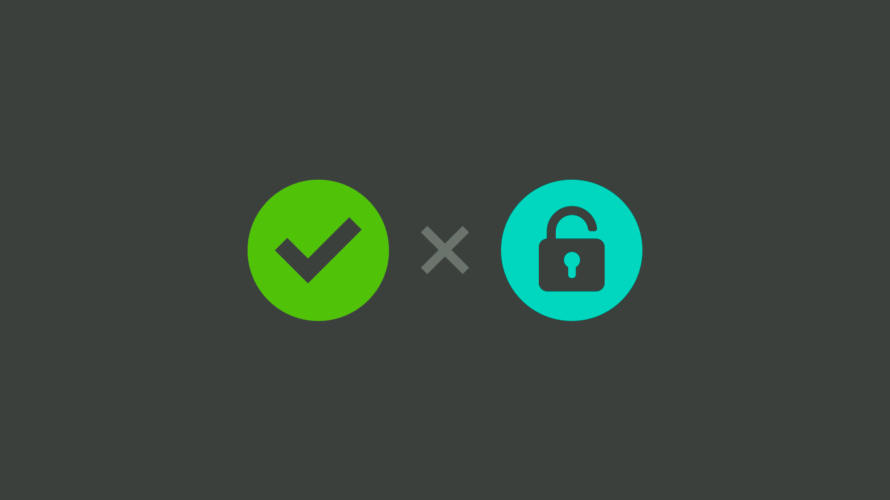

Tópicos Avançados de Segurança da Informação
Além das medidas de segurança básicas, existem tópicos avançados
que ajudam a proteger ainda mais
os sistemas e dados.
Criptografia
A criptografia é um conjunto de técnicas para proteger a confidencialidade das informações, tornando-as ilegíveis para pessoas não autorizadas.
Autenticação x Autorização
A autenticação é o processo de verificar a identidade de um usuário
ou sistema,
geralmente por meio de senhas ou chaves criptográficas. Já a
autorização é o processo de determinar o que um usuário pode fazer após ter
sido autenticado. É o controle de acesso
a recursos ou serviços, definindo
quem tem permissão para acessá-los e o que pode ser feito com eles.
Auditoria

A auditoria é o processo de monitorar e registrar as atividades de usuários
e sistemas,
geralmente para fins de investigação de incidentes de segurança.